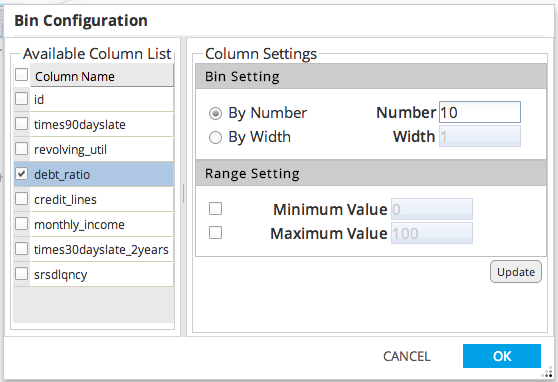

Histogram Chart
- Use Histogram Chart to create a histogram of the specified columns in the dataset.
- Database operators must output a table/view for Histogram Chart to be enabled.
- Hadoop operators must store results for Histogram Chart to be enabled.
- Histogram Chart is accessible from the Explore menu of the operator toolbar or by right-clicking an appropriate operator.
